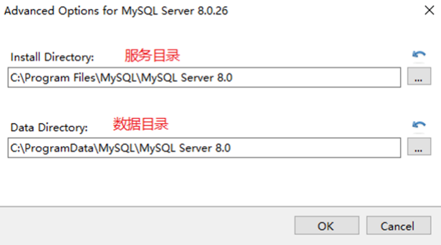
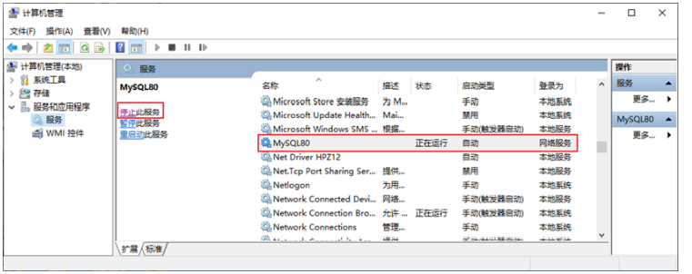
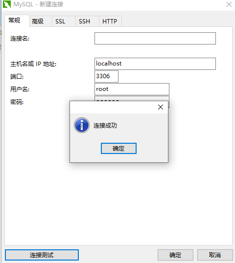

1. 下载软件
官网：https://www.mysql.com
下载地址：https://dev.mysql.com/downloads/windows/installer/8.0.html
- MySQL Community Server 社区版本，开源免费，自由下载，但不提供官方技术支持，适用于 大多数普通用户。
- MySQL Enterprise Edition 企业版本，需付费，不能在线下载，可以试用30天。提供了更多的 功能和更完备的技术支持，更适合于对数据库的功能和可靠性要求较高的企业客户。
- MySQL Cluster 集群版，开源免费。用于架设集群服务器，可将几个MySQL Server封装成一个 Server。需要在社区版或企业版的基础上使用。
- MySQL Cluster CGE 高级集群版，需付费。
目前最新版本为 8.0.29 ，发布时间 2022年1月 。
2. 安装
点击安装，按照步骤一步步来，注意安装路径

- Development Machine（开发机器） ：该选项代表典型个人用桌面工作站。此时机器上需要运行 多个应用程序，那么MySQL服务器将占用最少的系统资源。
- Server Machine（服务器） ：该选项代表服务器，MySQL服务器可以同其他服务器应用程序一起 运行，例如Web服务器等。MySQL服务器配置成适当比例的系统资源。
- Dedicated Machine（专用服务器） ：该选项代表只运行MySQL服务的服务器。MySQL服务器配置 成使用所有可用系统资源。
3. MySQL8.0 环境变量
如果不配置MySQL环境变量，就不能在命令行直接输入MySQL登录命令。下面说如何配置MySQL的环境 变量：
步骤1：在桌面上右击【此电脑】图标，在弹出的快捷菜单中选择【属性】菜单命令。
步骤2：打开【系 统】窗口，单击【高级系统设置】链接。
步骤3：打开【系统属性】对话框，选择【高级】选项卡，然 后单击【环境变量】按钮。
步骤4：打开【环境变量】对话框，在系统变量列表中选择path变量。
步骤 5：单击【编辑】按钮，在【编辑环境变量】对话框中，将MySQL应用程序的bin目录（C:\Program Files\MySQL\MySQL Server 8.0\bin）添加到变量值中，用分号将其与其他路径分隔开。
步骤6：添加完成 之后，单击【确定】按钮，这样就完成了配置path变量的操作，然后就可以直接输入MySQL命令来登录 数据库了。
4. MySQL8.0登录与停止
4.1 服务的启动与停止
MySQL安装完毕之后，需要启动服务器进程，不然客户端无法连接数据库。 在前面的配置过程中，已经将MySQL安装为Windows服务，并且勾选当Windows启动、停止时，MySQL也 自动启动、停止。
方式1：使用图形界面工具 步骤1：打开windows服务 方式1：计算机（点击鼠标右键）→ 管理（点击）→ 服务和应用程序（点击）→ 服务（点 击）
- 方式2：控制面板（点击）→ 系统和安全（点击）→ 管理工具（点击）→ 服务（点击）
- 方式3：任务栏（点击鼠标右键）→ 启动任务管理器（点击）→ 服务（点击） 方式4：单击【开始】菜单，在搜索框中输入“services.msc”，按Enter键确认 步骤2：找到MySQL80（点击鼠标右键）→ 启动或停止（点击）

4.2 登录
1
2
3
mysql -h 主机名 -P 端口号 -u 用户名 -p密码
# 举例
mysql -h localhost -P 3306 -u root -pabc123 # 这里我设置的root用户的密码是abc123
4.3 Navicat登录
使用Navicat会遇到1251问题，这是密码编码方式不对引起的，需要配置后登录。
1
2
3
4
5
6
7
8
9
10
# 1. 通过shell登录mysql
mysql -h localhost -P 3306 -u root -p123456
# 2. 修改密码编码方式
mysql> use mysql;
Database changed
mysql> alter user 'root'@'localhost' identified with mysql_native_password by '123456';
Query OK, 0 rows affected, 1 warning (0.00 sec)
mysql> flush previleges;
# 3.刷新权限，重新Navicat连接
flush privileges;
